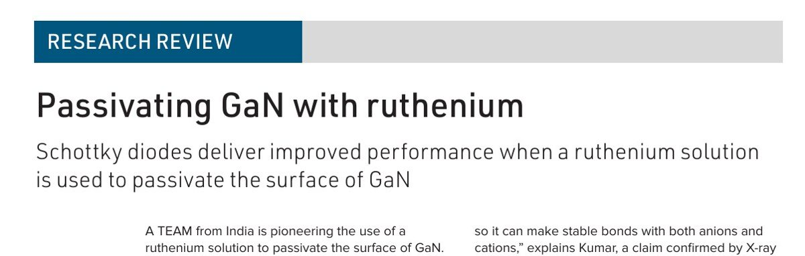
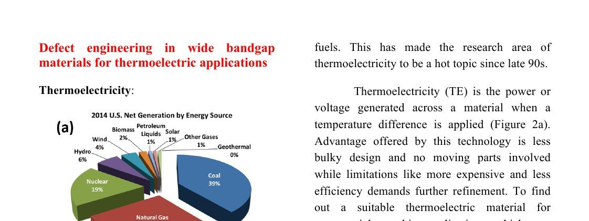

Research Output
Publications
Ninety-one papers, fifteen conference proceedings, three patents and thirty invited talks. The full list below is searchable and loads live from ORCID.
91Publications
27h-index
44i10-index
1,854Citations
15+Conf. Proceedings
3Patents
2Sci. Communication
30+Invited Talks
Landmark Papers
Ten Most Significant Publications
Starred (★) publications represent the core intellectual contributions of the research programme, selected for originality, community impact, and citation influence.
[1] ★ Landmark
Wide Range Temperature-Dependent (80–630 K) Study of Hall Effect and Seebeck Coefficient of β-Ga₂O₃ Single Crystals
First reported Seebeck coefficient study across a wide temperature range on single crystal β-Ga₂O₃. As Ga₂O₃ emerges as the leading ultra-wide-bandgap semiconductor globally, this paper establishes the author among the earliest researchers defining its thermoelectric baseline. Covered by the Semiconductor Society of India (SSI).
[2] ★ Landmark
Thermoelectric Properties of GaN with Carrier Concentration Modulation: An Experimental and Theoretical Investigation
Most comprehensive combined experimental and DFT theoretical study of GaN as a thermoelectric material. Established GaN's viability in the thermoelectric space — cited by multiple subsequent groups working on wide-bandgap thermoelectrics globally.
[3] ★ Landmark
Enhancement of Thermopower in GaN by Ion Irradiation and Possible Mechanisms
First experimental demonstration that swift heavy ion irradiation can be used as a precision tool to engineer thermopower in GaN. This paper opened the ion-beam thermoelectric engineering research direction that has since defined the author's research identity and generated a series of funded projects.
[4] ★ In-Situ DLTS
Identification of Swift Heavy Ion Induced Defects in Pt/n-GaN Schottky Diodes by In-Situ Deep Level Transient Spectroscopy
First reported in-situ DLTS measurement of ion-beam induced deep-level defects in GaN in real time during irradiation. The custom in-situ DLTS system was entirely designed and built by the author. No other group in India has demonstrated this experimental capability.
[5] ★ Instrumentation
Apparatus for Seebeck Coefficient Measurement of Wire, Thin Film, and Bulk Materials (80–650 K)
Original instrumentation paper describing a custom-designed versatile Seebeck and resistivity measurement system — one of very few such systems designed indigenously in India. Published in the premier instrumentation journal of the American Institute of Physics. Now used by multiple collaborating groups nationally.
[6] ★ Landmark
In-Situ Transport and Microstructural Evolution in GaN Schottky Diodes and Epilayers Exposed to Swift Heavy Ion Irradiation
First real-time in-situ electrical characterisation of GaN devices under live SHI beam combined with post-irradiation TEM microstructural analysis. Among the most technically sophisticated experiments reported from IUAC.
[7] ★ Landmark
Barrier Height Enhancement of Ni/GaN Schottky Diode Using Ru-Based Passivation Scheme
[8] ★ Landmark
Surface States Passivation in GaN Single Crystal by Ruthenium Solution
Papers [7] & [8] together form a connected body of work on ruthenium-based GaN passivation — published a decade apart (2014 & 2023) and selected as the basis of an invited Research Review in Compound Semiconductor magazine (Vol. 29, Issue II, 2023) — an exceptionally rare recognition.
[9] ★ Foundational PhD Paper
Electrical and Microstructural Analyses of 200 MeV Ag¹⁴⁺ Ion Irradiated Ni/GaN Schottky Barrier Diode
Foundational paper from the author's PhD establishing the ion-damage model for III-V Schottky barrier devices under heavy ion bombardment. First simultaneous in-situ electrical + TEM microstructural correlation study of SHI-irradiated GaN SBDs. The seed paper from which the entire subsequent research programme grew.
[10] ★ RSC Outstanding Student Paper Award 2024
Improved Thermoelectric Performance of PEDOT:PSS/Bi₂Te₃/rGO Ternary Composite Films for Energy Harvesting
High-performance printable flexible thermoelectric composite combining organic polymer, inorganic semiconductor, and graphene in a single ternary architecture. Selected for the RSC Advances Outstanding Student Paper Award (2024).
Science Coverage
Media Coverage & Science Writing


Intellectual Property
Patents
Indian Patent IN 44683 — Granted · 2015
A System for Providing Nest-ID Based Identification of a Geographical Location and Method Thereof
Indian Patent Application Filed · 2018
GaN-Based Thermoelectric Device
Indian Patent Application Filed · 2018
Ga₂O₃ Thermoelectric Generator for Higher-Temperature Applications
Invited Talks & Oral Presentations
30+ Talks at Premier Venues
International (Overseas): 3 · International (India): 9 · National: 18+
Invited Lectures at Premier Institutions
FDP on Advances in Physical Sciences
MESD 2023 — International Conference on Materials for Energy & Sustainable Development
I-STEM Tech Management Conclave
QIP Faculty Development Programme — Radiation Effects in Semiconductor Materials
QIP Faculty Development Programme — Advanced Materials Characterisation (two lectures)
UGC-HRDC Refresher Courses
Refresher Course in Research Methodology
13th Refresher Course in Materials Science
International Conferences — Oral & Poster
DRIP XVII — 17th International Conference on Defect Recognition, Imaging & Physics in Semiconductors
MRS Fall Meeting — Symposium M: Nitride and Zinc Oxide Semiconductor Materials
ICNS-9 — 9th International Conference on Nitride Semiconductors
Every Paper
Search the Full Publication List
Loaded live from ORCID, so the list is never out of date. Search by material, technique, journal, co-author or year, and export whatever is on screen as BibTeX.